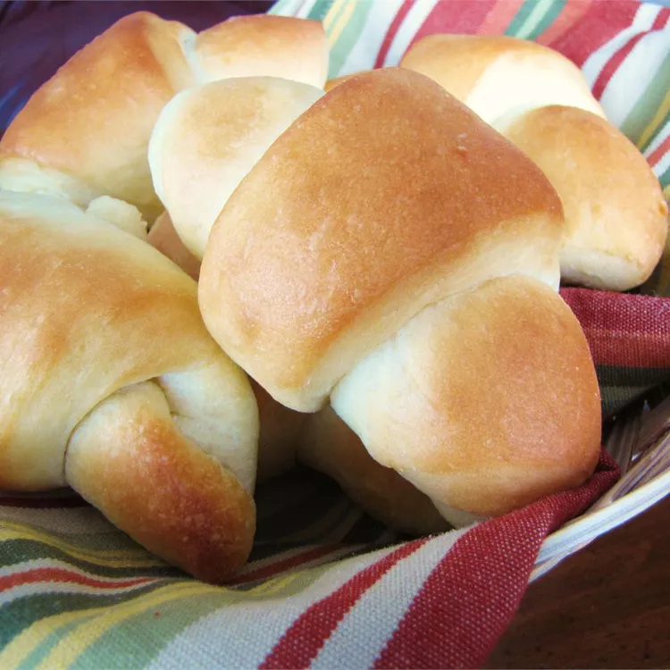

Sweet Dinner Rolls

Description
This sweet roll recipe makes wonderful dinner rolls but can also be used to make cinnamon rolls. Mix the dough in
your bread machine but bake the rolls in the oven. They're light, soft, and sweet.
Ingredients
- ½ cup warm water (110 degrees F/45 degrees C)
- ½ cup warm milk
- ⅓ cup butter, softened
- 1 large egg
- 3 ¾ cups all-purpose flour
- ⅓ cup white sugar
- 1 teaspoon salt
- 1 (.25 ounce) package active dry yeast
- ¼ cup butter, softened
Steps
- Place water, milk, 1/3 cup butter, egg, flour, sugar, salt, and yeast into the pan of a bread machine in the order
listed, or follow the order recommended by your manufacturer if different. Select Dough/Knead and First Rise
Cycle; press start.
- When the cycle finishes, turn dough out onto a lightly floured surface. Divide dough in half. Roll each half
into a 12-inch circle. Spread 1/4 cup softened butter over entire round. Cut each circle into 8 wedges. Roll
wedges starting at the wide end; roll gently but tightly. Place point side down on ungreased cookie sheet.
Cover with a clean kitchen towel and put in a warm place to let rise for 1 hour.
- Meanwhile, preheat the oven to 400 degrees F (200 degrees C).
- Bake in the preheated oven until golden, 10 to 15 minutes.
Return to home